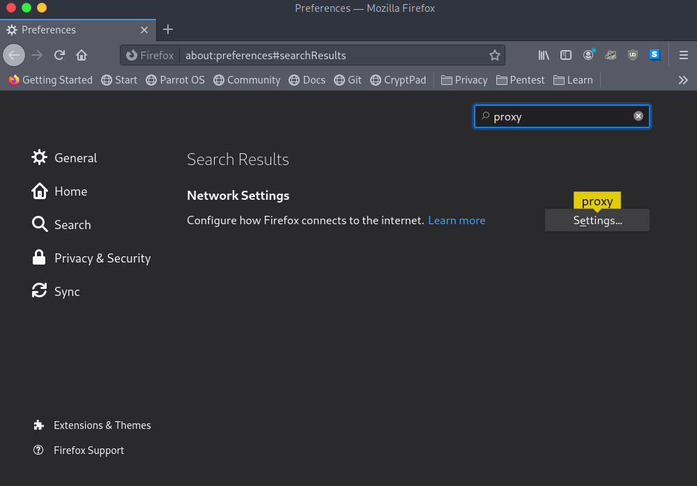
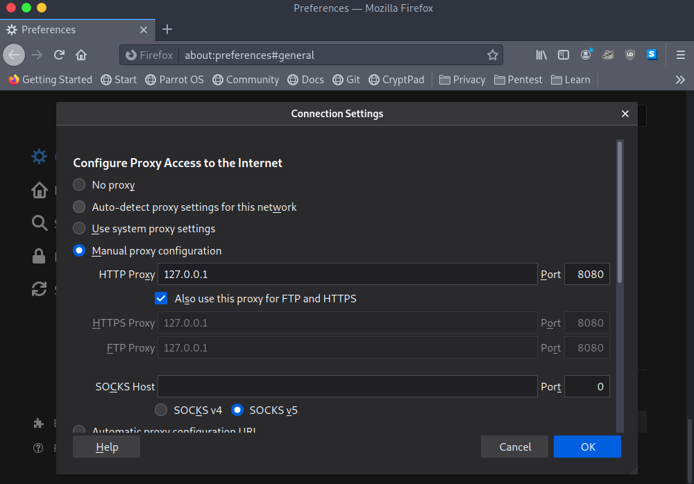
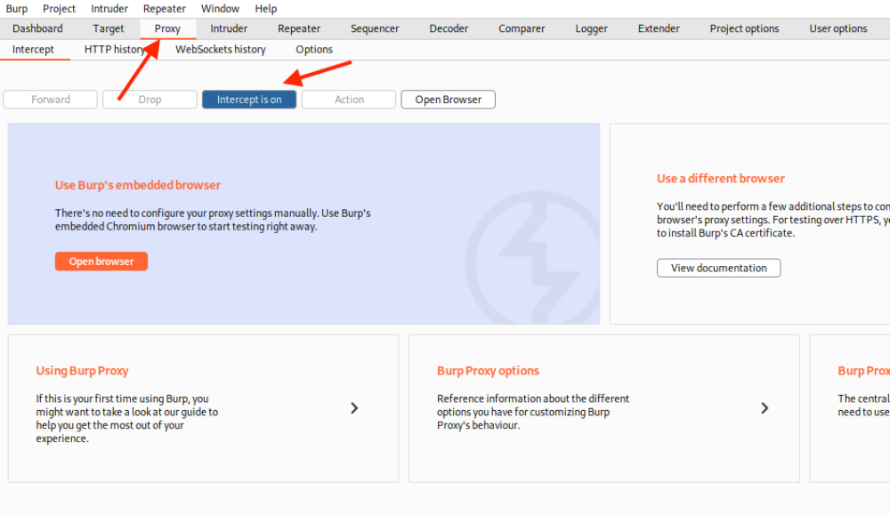

burpsuite
A web crawler (also known as a web spider or web robot) is a program or automated
script which browses the World Wide Web in a methodical, automated manner. This process
is called Web crawling or spidering. Many legitimate sites, in particular search
engines, use spidering as a means of providing up-to-date data.
If you tunnel web traffic through Burp Suite (without intercepting the packets), by
default it can passively spider the website, update the site map with all of the
contents requested and thus creating a tree of files and directories without sending
any further requests.
Firefox Proxy Settings:


Burpsuite Settings:
We need to disable the interception in Burp suite as it's enabled by default. Navigate to Proxy Tab , and
under Intercept subtab select the button where Intercept in on so to disable it.

Now that everything is setup correctly we refresh the page in our browser and switch in Burp Suite under
the Target tab and then on the Sitemap option:

Now we can use the hidden login info.
http://10.129.95.191/cdn-cgi/login
First, we attempt to login to the page with the credentials test:test as we aren’t trying to validate or gain
access. The login request will be captured by BurpSuite and we will be able to modify it.
Before we modify the request, let's send this HTTPS packet to the Repeater module of BurpSuite by
pressing CTRL+R .